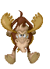

Родился Лосенок в конце февраля. В пургу и метель впервые увидел он этот мир. Увидев – ничего не понял. Да и дела ему пока в лесу не было. Нет. Вру! Было одно ооочень важное дело - сосать материнское вымя. Вымя с таким вкусным молоком, что начинала кружиться вытянутая ушастая рыже-коричневая голова. Бррррр…. Ну, ооочень вкусно! На жирном молоке Лосенок рос не по дням, а по часам. К концу первой недели он уже довольно сносно бегал, практически не отставая от матери – видавшей виды огромной Лосихи! Она была так огромна, что, носясь по лесу, Лосенок мог пробежать под ней ни мордой, ни ушами не задев брюха! А уж молоко сосать – так всему как струна вытягиваться приходилось. Мать перестала ложиться практически сразу. Но только не из-за вредности, а чтоб не баловать сыночка! Но это только укрепляло малыша и делало более приспособленным для житья в лесу. А слабому и больному в лесу делать нечего! Вмиг найдется претендент на нагулянное! Вон, в соседнем лесу, подсвинок годовалый, приболел слегка, и с поля убежать не успел, когда туда волки выбежали. Все кабаны в рассыпную – а он на обед! Вот такая жуткая история!
* * *
Незаметно прошла зима. С высоких сосен на голову Лосенка то и дело падали смешные прозрачные капли, от которых все тело пускалось в веселую дрожь. Бррррр….
Все реже подходил теленок к матери за молоком, которого почти не осталось. Да и не больно-то хотелось: почти всегда он получал от матери такого тумака, что порой после садился на задние ноги и долго ловил своими огромными глазами кружащийся лес. Мать отучала сына. Лосенок уже довольно сносно разбирался в съедобном: он уже знал, что можно есть, а что нельзя. Учила в основном мать. Но и другие лосихи, согнав выводок в круг, водили их по лесу, в определенном порядке и показывали, за счет чего можно выжить. Эти прогулки Лосенку особенно нравились. Здесь можно было пошалить с другими лосятами. Но другие лосята не очень-то жаловали нашего Лосенка: ростом и силушкой удался тот весь в мать и по росту был почти как годовалый. Побаивались его погодки.
- Ты не очень-то с сородичами дружбу заводи, - говорила частенько мать. – Опомниться не успеешь, как вымахаешь в здоровенного лося. И друзья твои врагами твоими станут! Туда не ходи – мое! Сюда не ходи – мое! Только и будешь это слышать! Ты лучше сам, здоровый уже, подальше уходи! Ходи, принюхивайся! Живет кто где, следы где какие, еды сколько есть. Волков не бойся, ничего не бойся – здоровенный ты уродился. И знай: один ударом копыта в голову или в грудь, и мало кто в лесу живой после этого останется!
Но силу применяй с умом! Первым не лезь, ну а если заваруха началась – мочи что силы есть! В драке не жалей ни живота своего, ни вражьего! И веди себя так, чтобы уважали не силу твою, а ум! А ума с корой осины не насобираешь! Вот и ходи и изучай все сам! Чему могла, я тебя научила. Расставаться нам не время еще, так что не забывай возвращаться! Разговаривать будем: что видел, что слышал, что делал. Выводы делать будем! А выводы – это уже почти ум! Иди малыш, ходи - броди! Скоро весна уже надолго зайдет в лес! Много интересного твориться будет! Иди! Пусть погодки сказки телкины слушают, а ты иди! И ничего не бойся! Знай: я всегда с тобой! Всегда! Даже когда меня рядом нет!
Слушал Лосенок мать всегда очень внимательно. Многого он не понимал, но чувствовал, что права мать. Ума набираться надо. А силушкой природа не обидела!
- И еще никогда не подходи к людям, - уже вдогонку убегающему сыну промычала мать. Но лосенок уже слышал только ветер в ушах, да хлесткие удары веток по бокам, впрочем, не очень болезненные.
Это был первый самостоятельный выход Лосенка так далеко. Никого рядом. Только лес!
* * *
Сорока ворчала где-то впереди. Лосенок (да уже пожалуй и Лось) мерно брел по краю болота. Длинные ноги не давали увязнуть в чавкающем торфе. Еды было полно: нежные веточки осин замечательно дополняли сладкую летнюю траву. Лось сам не знал, почему он всегда был уверен, что в любой момент может вернуться в лес, где жило его стадо, где живет его мать. Ни про какой компас он не знал, но ориентировался он превосходно. Лось решил обойти болото кругом. Солнце было в зените и это говорило о том, что света еще будет много, а темноты – мало и то ненадолго. Он помнил, что это время мать называла летом. Пересечь с ходу удалось только несколько проток, а многие приходилось преодолевать вплавь. Откуда он умел плавать – спросить было не у кого. Да и какая разница: умею - и все. Все вокруг было спокойно! Невдалеке плескались выдры. Все радовались лету. Теплу. Свету. Все жило и цвело. И Лось чувствовал, что с каждым днем становился больше и сильнее. Но, как говорила мать, - это от природы. А дело – за умом! Интересно: он бродит один с утра, и много ума уже накопилось? Очень хотелось спросить об этом маму. Но она была довольно далеко. А возвращаться не хотелось. Болото он обогнул за три дня и две ночи, выйдя на то же самое место, с которого начал свое первое путешествие. А вон и лес. Там недолго по кустам, потом направо через молодой сосняк, а там уже совсем недалеко до стада, где, как всегда, в стороне паслась или лежала его мама. Мамочка. Что-то щекотливо-щемяшее заворошилось в его могучей коричневой груди.
Ум! Что же это такое? Что в нем важного, что важнее силы будет? М-да! Не зря мать отправила его так далеко. Значит в лесу, где родился Лось, ума не было? Получается, что так! Ум – это что, как кора – съели - и нет? Не похоже! Ведь мать говорила, что я рассказать все должен буду, беседовать, а потом какие-то выводы. Очень хотелось ему поскорей узнать про эти выводы. Очень! Бррррр…
Лось пошел по направлению к своему лесу, но не старой дорогой, а через овраг.
* * *
Солнце уже коснулось макушек сосен, когда лось подошел к краю оврага. Дно оврага застилало озеро из тумана. В воздухе висели капельки, такие мелкие, что ими можно было спокойно дышать. Туман и какой-то странный гул: тихий и мощный, манящий и пугающий. Лось сделал первый шаг. Первый шаг в неизвестность. Он не знал, что его там ждет, но, помня слова матери о том, что ему некого и нечего бояться, особенно не утруждал себя рассуждениями: страшно - не страшно!
Гул постепенно нарастал, по мере погружения зверя в глубину оврага.
«Волков не бойся, ничего не бойся – здоровенный ты уродился. И знай: один ударом копыта в голову или в грудь - и мало кто в лесу живой после этого останется!
Но силу применяй с умом! Первым не лезь, ну а если заваруха началась – мочи что силы есть! В драке не жалей ни живота своего, ни вражьего! И веди себя так, чтобы уважали не силу твою, а ум! А ума с корой осины не насобираешь! Вот и ходи и изучай все сам!» - вертелись в голове слова матери! – Никого не бойся! Никого не бойся!
« Ходи, принюхивайся! Живет кто где, следы где какие, еды сколько есть.» - также примешивались слова Лосихи.
«…а ума с корой осины не насобираешь! Вот и ходи и изучай все сам… изучай все сам… изучай все сам…Тук-тук, тук-тук. Сердце постепенно набирало обороты. Набирал обороты и гул.
* * *
Кустарник уступил место жесткой траве, которую уже совсем не было видно. Туман достигал уже шеи Лося. Дальше идти не было смысла: еще с десяток шагов и голова скроется в мутном молоке тумана. Да и интересного ничего не было. Так: мыши, бурундуки и всякая другая лесная мелочь. Лось медленно развернулся и, убыстряясь, потопал прочь. Темнело, и ему хотелось к ночи добраться до леса. Своего леса!
Туман доходил уже до брюха, как Огромное животное почувствовало, что сзади, прямо на него что-то движется. Медленно, но верно настигая Лося! Гул нарастал. Становился резче и выше по тону. Лось остановился. Развернулся задом к приближающемся шуму, а голову повернул: он был готов нанести копытом свой страшный удар. … ничего не бойся… ничего не бойся… ничего не бойся!!!
* * *
Холодное шумящее облако накрыло Лося с головой. Комары! Миллиарды комаров окружили бедное животное. Дз-дз-дз-дз сливалось, мешалось, кружилось! Лось ничего не понимал! Он мог убить волка, да и кого угодно ударом копыта, а комары…., что он мог с ними поделать? В Своем лесу их было не так много, и особенно они не досаждали. А сейчас? Даже если его укусит каждый сотый комар – в нем не останется ни одной капли крови! Н и о д н о й!
- И лежать мне высосанным до последней капли на дне оврага, и мама не узнает где могилка моя! – печально размышлял Лось.
- Дз-дз-дз-дз! Лось! Лоось! Ты чего такой напряженный весь, копытами кидаешься, сжался весь? Уже небось и о могилке своей никому неизвестной подумать успел?
- Дз-дз-дз-дз! Да расслабься ты, расслабься! Никто тебя тут погибели подвергать не будет.
- Бррррр…А ты кто такой? Я тебя не вижу, а слышу громко, даже гул не мешает! – не очень уверено заговорил Лось.
- Дз-дз-дз-дз! Это я, Главный Комар! Так меня можешь и называть. Так вот. Дело к тебе есть у меня. Не на жизнь, а на смерть! Да расслабься ты! Здесь я, в ухе у тебя в правом! Вот и слышишь ты меня хорошо!
- Так что за дело привело ко мне тебя и твою армаду? – уже увереннее поинтересовался лось?
- Дз-дз-дз-дз! Дело, в общем, не хитрое. Уродилось племя мое в этом году очень поздно. Жара-то какая стояла. Вот болота и подсохли. Не могли мы вылететь из сухой земли. Пока мы не «станем на крыло», мы, это, как-бы, водоплавающие. Это сейчас после дождей болота опять полны, да брата нашего уже там нет. Жалко братву! Вот только в этом овраге, где туман по ночам не давал высохнуть болотцу, сегодня мы и народились. Я первым взлетел и по нашему закону теперь я Главный Комар! – гордо заявило насекомое, что у Лося не осталось никаких сомнений в его социальном статусе. – И кстати, как ты говорил, не моя армада к тебе пришла, а ты сам непонятно зачем на ночь глядя в овраг приперся! На фига, спрашивается? – вопрошал Главный. – Да! О деле. Я не зря говорил тебе, что дело не на жизнь, а на смерть. Вот вокруг тебя сейчас кружится один миллион триста двадцать пять тысяч сто семьдесят два комара и всего двести комарих! Как такое безобразие в природе произошло – ума не приложу! Мутации, радиации, да бог с ними! Что есть, то есть! Надо принимать действительность такой, какая она есть! Жить нам, комарам, до рассвета. Такая комариная наша доля, а вот двести комарих нас переживут только на день.
- Бррррр…А при чем здесь я? – уже с оттенками дерзости пробормотал Лось. – и что за дело ко мне такое?
- Не перебивай! Дите несмышленое! Ты еще далек от процесса размножения, а наше племя время приперло к стенке! Собрались мы на ночь в лес лететь, чтобы двести комарих крови напились. Да не морщись ты: не едят они ее, как блохи и слепни, а для размножения запасают. Мы комары кровь вообще не употребляем! Так вот: в лес мы лететь не сможем – от тумана крылья слишком мягкие. А если завтра, когда нас уже не будет, жара будет, или будет дождь – все! Погиб мой род! Вот поэтому дело и есть не на жизнь, а насмерть! – мрачно закончил комар, видно, задумавшись.
- Слушай, парень! Ты, видать, в овраг самим комариным Богом послан! Не откажи, дай комарихам твоей крови напиться! Всего двести маленьких укусиков. Пару дней зуда, и все! А у меня и рода моего потомство будет. И завтра свое последнее солнце я встречу спокойно и умиротворенно! Дети – это святое! Не откажи! Великое дело сделаешь!
- Бррррр…А почему ты спрашиваешь меня? Вон в моем лесу твой брат разрешение не спрашивает: жалит, куда не попадя!
- Зеленый ты еще, хоть и коричневый и вымахал не по годам! Ты САМ пришел к нам, а мы, комары, хоть и маленькие, да понятия имеем. Ты вроде гость! Как тебя кусать теперь прикажешь? Вот и испрашиваю я твоего позволения! Поможешь? – как бы заглядывая в глаза спросил Комар.
- Бррррр…Как тебе отказать после всего сказанного тобой? Мы, лоси, тоже какие-никакие понятия имеем! Кусайте, и да будет вам мир! Только не очень больно и не в одно место! И не в голову и уши!
- Дз-дз-дз-дз! Я знал, что ты поможешь нам! Спасибо! Ты нам теперь вроде родственника.
- Спасибо? Так вы уже…
- Уже! И ведь совсем не больно!
- Совсем! – довольно ответил Лось. – так я пойду?
- Сейчас пойдешь своей дорогой! Только зная, что за твое доброе дело до конца твоих дней ни один комар тебя не укусит! Это говорю тебе я – Главный Комар! Ни один! Ты теперь брат нам. Родственник. Мы, комары, завтра умрем, достойно умрем. Без страха и сожаления, потому, что дело своей жизни мы сделали. Мы. С твоей помощью. Спасибо тебе, Лось, и поклон земной. Иди своей дорогой.
Лось уже почти в темноте вышел не излучину и довольно быстро, рысцой, побежал в Свой Лес.
* * *
Стадо, сбившись в кучу, спало. Две самки бродили по кругу невдалеке, охраняя покой спящих. Мать свою он нашел как всегда в стороне. Она мирно спала. Лось прилег рядом, поджал ноги, положил свою ушастую голову на шею матери и тут же уснул.
* * *
Проснулся Лось от пинка под зад. Он вертел головой, ничего не понимая!
- Вставай, гулена! Три дня бродил неизвестно где! Вон холку как комары закусали. По болотам шлялся? Ну, вставай! Солнце уже над головой! Надо пойти поесть, а там и поговорим. И не глядя на сына, Лосиха свернула с поляны в лес. Разговора не состоялось.
Лось посмотрел на солнце! Оно было необычайно ласково, но он вспомнил про последнее утро Главного Комара. Не было сомнения, что он и его свита ушли гордо и радостно. Ведь в брюшках двухсот комарих в его лосиной крови уже зарождалась новая жизнь. И он, Лось, был к этому делу самым, что ни на есть, настоящим образом причастен. И от этого ему было радостно. И грустно и радостно одновременно!
* * *
Стадо, повинуясь воле вожака, огромной Старой Лосихи, медленно брело по краю леса, меняя место. Там где они стояли почти месяц, свежей коры и травы почти не осталось. Вот и шли они искать новый Свой Лес.
Место оказалось в низине. Влажное. Свежей коры – завались. Да только комаров было особенно много. Изводили они стадо, а Лось – хоть бы хны! Ни один комар не укусил его с Той поры. Жужжать - жужжали, но не кусали. Иногда собирались в кучу и летали вокруг него зигзагами, а он гонялся за ними.
- Смотрю, комары твоими лучшими друзьями стали! Играешь с ними! Вон какая шкура гладкая, не покусанная, целенькая! Не то, что моя! – недобро заметила Старая Лосиха. И чем ты так им не нравишься? Всех кусают, а его нет! Ты что сказочную маскитиловую траву нашел, когда по дальнему болоту три дня бродил? Так покажи ее нам!
- Да не знаю я, почему они меня не кусают. И сказки все это про какую-то там мас…маски…, ну, в общем, траву! Сказки! – пытался обороняться лось.
- Тогда пасись один, в стороне, как мать твоя, а то те комары, которые по идее должны были достаться тебе, достаются нам! А ты вон, какой огромный! Сколько комаров мог бы на себя от нас забрать! Нехорошо! – переходя на более высокие тона, говорила Старая Лосиха. – Иди и пасись в стороне! Не место тебе среди нас!
Лось побрел к матери, но та, увидев сына, наперекор своей привычке сторонится толпы, рысью подбежала к стаду и скрылась среди сородичей.
* * *
Свесив голову Лось медленно брел прочь. Он не замечал ничего. Длинные ветки хлестали его по морде и животу. Больно. Но он не замечал. Глаза, полные слез, не смотрели под ноги, они смотрели вдаль. Вдаль, где за излучиной начинался кривой разрез оврага. Где-то найдешь, где-то потеряешь! От кого он это слышал?
Он знал, куда идет. Он не заглядывал далеко в будущее, но был абсолютно уверен, что в Тот вечер, там, в овраге, он нашел намного больше, чем потерял сегодня в лесу! В конце концов, он шел к Своим. Туда, где предательство никогда не было в почете. А была только любовь. Безусловная любовь к жизни!
Туман медленно поднимался выше глаз. И только слабый шелест травы, да все продолжающийся уклон, говорили о том, что он пришел домой.
Домой, где тебя ждут.